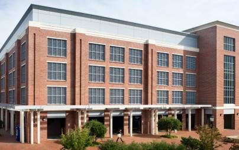

Competitors will all begin at the starting line and then must reach the two checkpoints in order.
There is no defined route for the race. Participants may follow whatever route they feel is fastest.
Starting Line
Checkpoint 1
Side of building closest to tennis courts
Checkpoint 2
Front entrace beneath the neon sign
Finish Line
The race will be held in two seperate heats based on bikes with a winner for the normal bikers and one for the Tar Heel bikers.
There is a Tar Heel Bike hub located at SASB. A map can be found with all bike hubs and how many bikes they have here
Please show up ~10 minutes early to sign in and get your number
Rules To Remember: